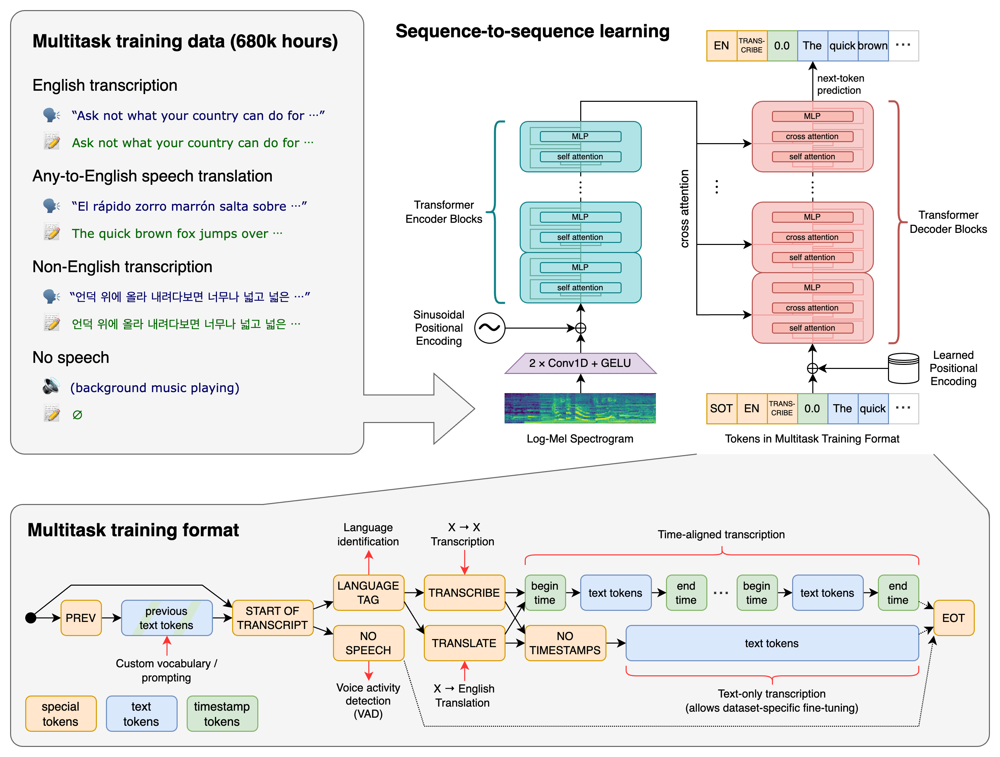
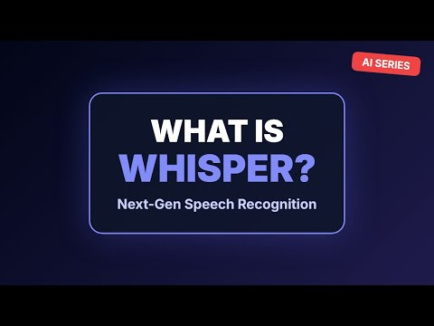
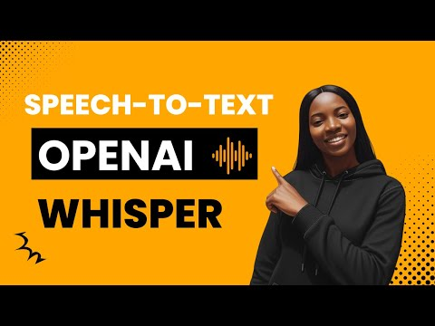

OpenAI Whisper 学习手册
把又长又干的 README 拆成一条清晰的学习路径：从「这是什么」「能做什么」，到「架构怎么搭、代码从哪读起」，再到「怎么在本机跑起来」。Whisper 是 OpenAI 开源的通用语音识别模型——用 68 万小时弱监督数据训练，一个模型同时做多语种转写、语音翻译（→英文）、语种识别、语音活动检测。

1 · 这是什么 深入开始
一句话：一个开箱即用的通用语音识别（ASR）模型 + 命令行/Python 库，把音频转成文字，顺带能翻译、识别语种。
Whisper 由 OpenAI 出品，论文《Robust Speech Recognition via Large-Scale Weak Supervision》（arXiv:2212.04356）。它的核心卖点不是某个新网络结构（用的是标准 Transformer 编码器-解码器），而是「规模 + 弱监督」带来的鲁棒性：在 68 万小时、横跨多语言/多任务的网络音频上训练，使它开箱就能在各种口音、背景噪声、专业术语下稳定工作，无需针对你的数据微调。代码与模型权重都以 MIT 许可发布，可商用。
一个模型，四种任务
🗣️ 多语种转写
把 99 种语言的语音转成对应语言的文字（speech → same-language text）。
🌐 语音翻译
把非英语语音直接翻成英文文字（X → English），用 --task translate。
🔎 语种识别
不知道说的是哪国语言？模型先猜语种（detect_language()）。
🔇 语音活动检测
区分「有人说话」与「无语音/背景音乐」（VAD），减少幻觉输出。
2 · 能力、模型与表现
六个模型档位，在速度 ↔ 精度 ↔ 显存之间取舍。入门用 turbo（默认）或 base 即可。
模型一览（官方 README 数据）
| 档位 | 参数量 | 英文专用 | 多语种 | 所需显存 | 相对速度 |
|---|---|---|---|---|---|
| tiny | 39 M | tiny.en | tiny | ~1 GB | ~10x |
| base | 74 M | base.en | base | ~1 GB | ~7x |
| small | 244 M | small.en | small | ~2 GB | ~4x |
| medium | 769 M | medium.en | medium | ~5 GB | ~2x |
| large | 1550 M | N/A | large | ~10 GB | 1x |
| turbo | 809 M | N/A | turbo | ~6 GB | ~8x |
large-v3 的优化版——速度接近 base、精度接近 large，但不支持翻译任务（要翻译用 medium/large）。CPU 也能跑 tiny/base/small，large/turbo 建议有 GPU。各语言识别表现（官方图，WER / CER）
下图是 large-v3 与 large-v2 在 Common Voice 15 与 Fleurs 上按语言拆分的词错误率 WER（斜体为字符错误率 CER，越低越好）。可见 Whisper 在主流语言上错误率很低，但表现随语言差异很大——小语种明显更难。

3 · 架构组成
标准的 Transformer 编码器-解码器（seq2seq）：编码器「听」音频频谱，解码器「写」文字 token；多任务靠一串特殊 token 切换。
① 音频前端
音频→重采样 16kHz→log-Mel 频谱→经 2×Conv1D + GELU 卷积茎下采样，加正弦位置编码，喂给编码器。每次处理 30 秒窗口。
② Transformer 编码器
若干层 self-attention + MLP，把频谱编码成一串音频特征向量（声学表示）。
③ Transformer 解码器
自回归生成文字 token：每层 self-attention + cross-attention + MLP，用 cross-attention 去「看」编码器输出，配可学习位置编码。
多任务训练格式：用特殊 token 把任务串起来
所有任务共用同一个解码器，靠输入序列开头的一串特殊 token 来指定「现在干哪件事」。这是 Whisper 设计的精髓：
特殊 token 包括：SOT(转写起始)、<|语种|>、TRANSCRIBE vs TRANSLATE、NO SPEECH(VAD)、NO TIMESTAMPS 或带时间戳的 begin/end time token、EOT(结束)。把「该用哪种任务、哪种语言、要不要时间戳」全部表达成 token，因此一个模型就能多任务。
可用模型规模（结构相同，层数/宽度不同）
4 · 技术原理
把「一段音频怎么变成文字」拆成四步：切窗+特征 → 编码 → 解码 → 长音频拼接。
① 30 秒滑窗 + log-Mel 频谱
模型一次只吃 30 秒。transcribe() 读入整段音频后，用一个滑动的 30 秒窗口逐段处理。每段先做 log_mel_spectrogram() 变成对数梅尔频谱（large-v3 用 128 个 mel，其余 80），不足 30 秒就 pad_or_trim() 补零。
② 编码器：把声音变成向量
频谱过 2×Conv1D（含一次步长 2 的下采样）+ GELU 形成卷积茎，加正弦位置编码后进入多层 Transformer 编码器，输出一串声学特征向量，供解码器反复「回看」。
③ 解码器：自回归地「写出」文字
解码器从 SOT 开始逐 token 生成。每步：先做语种识别（detect_language() 看首 token 概率），再按特殊 token 决定转写还是翻译。解码策略可选贪心或 beam search，并带温度回退（temperature fallback）：若某段输出的平均对数概率太低或压缩比异常（疑似重复/幻觉），就升高温度重采样。还会抑制非法 token（SuppressTokens）以稳住输出。这些都在 decoding.py 里。
no_speech 概率 + 压缩比/对数概率阈值来检测并跳过，这也是 VAD 任务被并入训练格式的原因。④ 长音频：逐窗解码 + 时间戳拼接
- 逐窗推理：每个 30s 窗口解码出带时间戳 token 的文字；时间戳决定窗口如何向前滑动（接着上一段的结尾）。
- 上下文延续：上一窗口的文本作为
PREV提示喂入下一窗口，保持连贯（也支持自定义initial_prompt注入专有名词）。 - 词级时间戳（可选）：
timing.py用cross-attention 权重 + DTW（动态时间规整）把每个词对齐到音频时间，必要时用triton_ops.py的 GPU kernel 加速。 - 输出：
utils.py把结果写成txt / srt / vtt / tsv / json（字幕直接可用）。
5 · 代码结构与技术栈 从这里上手读码
Whisper 代码非常小而精：核心就一个 whisper/ 包、十来个 .py 文件、约 16 万字节 Python，没有复杂工程脚手架——很适合逐文件读懂。
技术栈：100% Python
GitHub /languages API 显示仓库是纯 Python（159,343 字节）。没有 C/C++/CUDA 源码——GPU 加速来自依赖的 PyTorch / Triton，而非仓库自带。
关键依赖（来自 requirements.txt / pyproject.toml）
| 依赖 | 作用 |
|---|---|
| torch (PyTorch) | 核心：定义 Transformer、跑前向推理、GPU 张量计算。 |
| tiktoken | OpenAI 的高速 BPE 分词器，把文字 ↔ token（含 Whisper 的多语种/特殊 token）。 |
| numpy | 数值数组，音频/频谱处理的基础。 |
| numba | 把词级时间戳里的 DTW 等热点函数 JIT 编译成机器码加速。 |
| tqdm | 转写进度条。 |
| more-itertools | 迭代器工具，用于分块/滑窗等处理。 |
| triton 仅 linux x86_64 | 可选：词级时间戳 DTW 的 GPU kernel；其它平台自动跳过。 |
| 系统依赖（非 pip）：ffmpeg（读取/重采样音频，必需）、Rust（极少数平台编译 tiktoken 时才需要）。开发额外依赖：black / flake8 / isort / pytest / scipy。 | |
顶层目录树（GitHub trees API，未克隆）
从这里开始读（建议顺序）
README.md— 先建立全貌：安装、CLI 与 Python 两种用法、模型表。whisper/__init__.py— 看load_model()如何把 "turbo" 这种名字映射到权重 URL 并下载缓存；_MODELS注册表一目了然。whisper/transcribe.py— 主流程入口：30 秒滑窗、温度回退、上下文拼接、以及cli()。读懂它就懂了「一条命令背后发生了什么」。whisper/audio.py— 音频如何经 ffmpeg 变成 log-Mel 频谱（模型的真正输入）。短小好读。whisper/model.py— 网络结构本体：AudioEncoder+TextDecoder+MultiHeadAttention+ModelDimensions。whisper/decoding.py— 最核心也最大：单个 30s 窗口内的解码逻辑、beam/贪心、detect_language()、token 抑制。whisper/tokenizer.py— 多任务序列的「语法」：SOT / 语种 / TRANSCRIBE / 时间戳 / EOT 等特殊 token 定义。whisper/timing.py（进阶）— 想要词级时间戳再看：cross-attention + DTW 对齐。
6 · 怎么部署使用 官方步骤
环境要求：Python 3.8–3.11（pyproject 已声明支持到 3.13） + ffmpeg（必需）。纯 API 不需要 GPU；CPU 能跑 tiny/base/small，large/turbo 建议有 NVIDIA GPU。
安装
# 安装 / 升级到最新发行版
pip install -U openai-whisper
# 或安装仓库最新提交
# pip install git+https://github.com/openai/whisper.git# Ubuntu / Debian
sudo apt update && sudo apt install ffmpeg
# macOS (Homebrew)
brew install ffmpeg
# Windows (Chocolatey)
choco install ffmpeg
# Windows (Scoop)
scoop install ffmpegpip install 报 tiktoken 相关编译错误：你的平台可能没有预编译 wheel，需要装 Rust；若提示 No module named 'setuptools_rust'，先 pip install setuptools-rust。命令行用法
# 转写（默认 turbo 模型）
whisper audio.flac audio.mp3 audio.wav --model turbo
# 指定语言转写
whisper japanese.wav --language Japanese
# 翻译成英文（turbo 不支持翻译，用 medium/large）
whisper japanese.wav --model medium --language Japanese --task translate
# 查看全部参数
whisper --helpPython 用法
import whisper
model = whisper.load_model("turbo")
result = model.transcribe("audio.mp3")
print(result["text"])import whisper
model = whisper.load_model("turbo")
# 载入并裁/补到 30 秒
audio = whisper.load_audio("audio.mp3")
audio = whisper.pad_or_trim(audio)
# 生成 log-Mel 频谱
mel = whisper.log_mel_spectrogram(audio, n_mels=model.dims.n_mels).to(model.device)
# 识别语种
_, probs = model.detect_language(mel)
print(f"Detected language: {max(probs, key=probs.get)}")
# 解码
options = whisper.DecodingOptions()
result = whisper.decode(model, mel, options)
print(result.text)- 更多示例与第三方扩展（Web Demo、各平台移植）见官方 Show and tell 讨论区。
- 全部可用语言见 tokenizer.py。
7 · 我的实操记录 待回填
本节按计划暂不真正安装（安装 torch + 下载模型权重体积较大）。已为你生成两个脚本，等你决定真装时一键运行、再把日志回填到本节。
🔍 scripts/check-env.ps1
只读体检：Python 3.8+、pip、git、ffmpeg（必需）、可选 Rust / NVIDIA GPU、磁盘空间。真装前先跑它。
⬇️ scripts/setup-whisper.ps1
建 venv → pip install -U openai-whisper → 用自带 tests/jfk.flac 跑一次转写。默认 dry-run，加 -Run 才真正执行。
建议的真装流程（Windows PowerShell）
# 1. 先体检（确认 ffmpeg 已装）
./scripts/check-env.ps1
# 2. 预览将要执行的动作（不改动任何东西）
./scripts/setup-whisper.ps1
# 3. 确认无误后真正执行（建 venv + 装 openai-whisper + 跑样例）
./scripts/setup-whisper.ps1 -Run▢ 回填占位（真装后补这里）
- 环境体检输出（check-env 截图 / 文本）
- 安装过程中的报错与解决（如 ffmpeg 未装 / tiktoken 需 Rust）
- jfk.flac 样例转写结果（首次会下载 turbo 权重）
- 自己的一段音频转写效果 + 字幕（srt/vtt）截图
- CPU vs GPU 速度、本机资源占用 / 耗时记录
turbo 不支持翻译任务；要把非英语翻成英文请用 medium 或 large。首次运行会从 OpenAI 的 CDN 下载模型权重（turbo ≈ 1.5GB，large ≈ 3GB），需联网且预留磁盘。8 · 相关 GitHub 项目
Whisper 火到催生了一整个生态：下面是最主流的重实现 / 加速 / 增强项目。星标与「最后更新」为抓取于 2026-06-27 的真实 GitHub 数据。
| 项目 | 定位 / 功能 | 与原版 Whisper 的差异 | 星标 | 最后更新 |
|---|---|---|---|---|
| openai/whisper | 官方原版：PyTorch 参考实现 + CLI + 权重 | 基准本体：最权威、最易读；但未做推理优化，大模型偏慢 | 103.7k | 2026-04-15 |
| whisper.cpp | C/C++ 移植（ggml），无 Python 依赖 | CPU 上也能实时、可跑在手机/浏览器/嵌入式；量化省内存 | 51.1k | 2026-06-26 |
| faster-whisper | 基于 CTranslate2 的重实现 | 同精度下快 4–5 倍、显存更省，API 接近原版，生产常用 | 23.9k | 2025-11-19 |
| WhisperX | 转写 + 精确词级时间戳 + 说话人分割 | 在 Whisper 之上加强制对齐 + diarization，适合做字幕/会议纪要 | 22.7k | 2026-06-26 |
| 🤗 Transformers | 通用模型库，内置 Whisper 实现 | 提供 pipeline / 批处理 / 微调 生态，便于和其它模型组合 | 162k | 2026-06-27 |
| Const-me/Whisper | Windows DirectCompute GPGPU 桌面应用 | 免装 Python 的 Windows .exe，用 D3D11 加速，适合普通用户 | 10.5k | 2026-05-24 |
| whisper-jax | JAX 实现，面向 TPU | TPU 上最高 70x 加速；但更新已停在 2024-04，活跃度低 | 4.7k | 2024-04-03 |
9 · 学习视频
Whisper 极其流行，教程很多。下面是几条可点击的学习视频——YouTube 封面已下载到本地（离线可见）；Bilibili 因本环境无法直连其图床、封面未能下载，故以可点链接列出（诚实标注）。
① 英文视频（封面已下载）

YouTube入门概念
YouTube上手教程② 中文视频（Bilibili，可点链接 · 封面未下载）
- 【干货】超详细 OpenAI Whisper 本地部署安装与使用超强教程 — UP：Ma5老师 · 视频/音频转字幕、翻译，新手向
- OpenAI Whisper 本地部署！语音转文字，消费级显卡可运行，含可视化页面 — UP：FutureAI实验室
- 免费开源的语音转文本软件 Whisper 的本地搭建详细教程 — Whisper 部署
- 纯内网部署 Whisper：无外网环境下安装 Whisper — 离线/内网场景
- faster-whisper 在 Windows 中的搭建 + 与 openai-whisper 对比 — 加速版对照
10 · 术语表 可搜索
学新项目最大的拦路虎是黑话。这里收录本手册出现的关键术语，输入关键词即时过滤（中英文都行）。
./assets/，可离线打开本页。